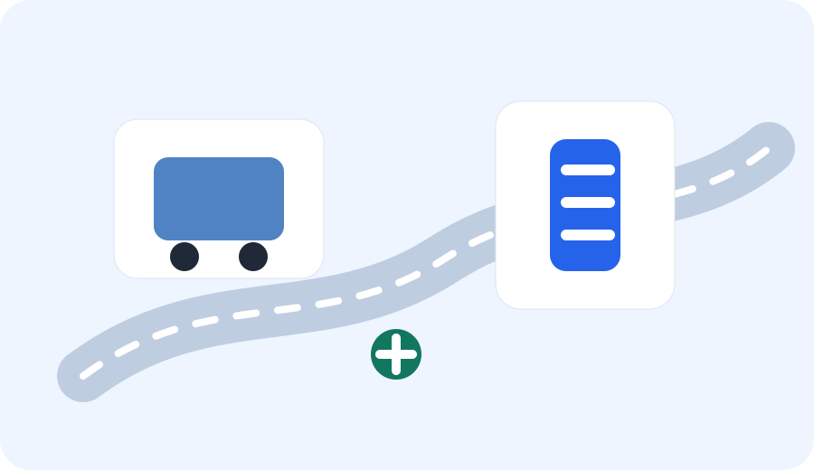

Neighborhood Guide
운정 생활은 행정동보다 “어느 역과 상권을 자주 쓰는지”로 나누면 훨씬 편합니다.
같은 운정 안에서도 생활 패턴은 꽤 다릅니다. 운정역과 GTX 운정중앙역을 기준으로 출퇴근하는 집, 야당역 상권을 자주 쓰는 집, 산내·해솔 생활권에서 학교와 학원을 도는 집, 교하·동패 쪽에서 공원과 차량 이동을 중심으로 움직이는 집은 필요한 정보가 다릅니다.
이 페이지는 동네를 순위로 나누지 않습니다. 병원·약국, 학교·학원, 주차, 외식, 카페, 주말 코스를 어느 순서로 확인하면 좋은지 생활권별로 정리합니다. 처음 이사 왔거나 주말 동선을 줄이고 싶은 가족이라면 자신이 자주 쓰는 역과 상권부터 골라보세요.

생활권별 먼저 볼 기준
운정이 처음이라면
생활권별 차이를 보기 전에 운정의 개발 흐름과 2026년 현재 교통·인구·생활 인프라 변화를 먼저 훑어보면 각 권역이 더 쉽게 이해됩니다.
생활권별 가이드 읽기
생활권을 고를 때 주의할 점
- 집 주소보다 실제로 자주 가는 역, 병원, 도서관, 장보기 장소를 기준으로 봅니다.
- 아이 생활권은 등교 시간과 하교 후 동선이 다를 수 있어 둘을 따로 확인합니다.
- 주말 생활권은 평일보다 주차와 대기 시간이 길어질 수 있습니다.
- 부동산을 볼 때는 실거래가만 보지 말고 출퇴근과 아이 동선을 함께 봅니다.